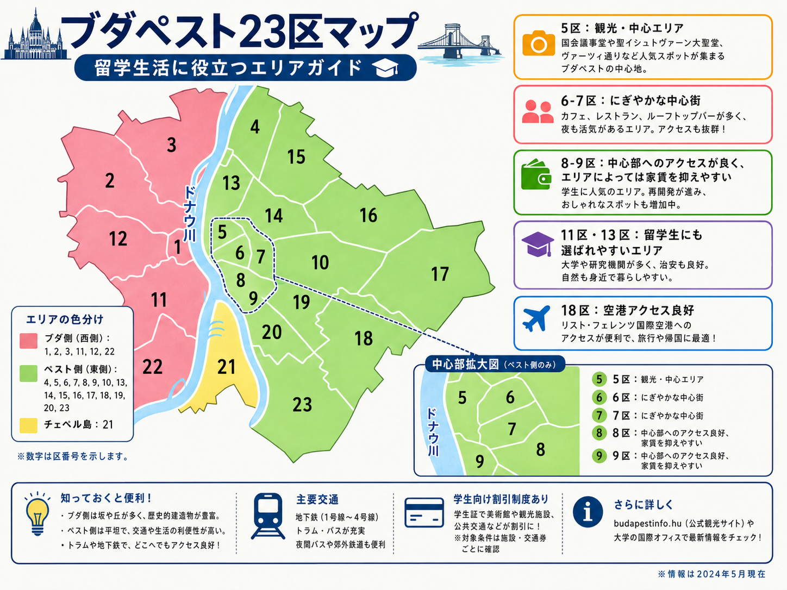

ブダペスト23区マップ

ブダペストはドナウ川を挟んで、 西側のブダと東側のペストに 大きく分かれています。 さらに、ドナウ川の中州にある チェペル島の21区があります。
まずこれだけ｜23区の基本
- ブダ側： 1、2、3、11、12、22区
- ペスト側： 4、5、6、7、8、9、10、13、14、15、16、17、18、19、20、23区
- チェペル島： 21区
ブダ側は丘陵地や住宅街が多く、ペスト側は比較的平坦で、 商業施設、大学、飲食店、公共交通が集まるエリアが多い傾向があります。
ただし、ブダ側にも大学や学生に便利な地域はあります。 「留学生なら必ずペスト側」というわけではありません。
ブダ側｜1、2、3、11、12、22区
ブダ側はドナウ川の西側にあり、 丘陵地が多く、住宅街や歴史的建造物が多いエリアです。
ブダ城周辺の1区のような観光地もあれば、 11区のように大学・住宅・商業施設がそろい、 学生生活でも使いやすい地域もあります。
ペスト側｜4、5、6、7、8、9、10、13、14、15、16、17、18、19、20、23区
ペスト側はドナウ川の東側にあり、 ブダ側と比べて平坦な地域が多いのが特徴です。
中心部には大学、飲食店、商業施設、観光地が集まっており、 地下鉄、トラム、バスなどを使いやすい地域も多くあります。
一方で、区番号だけで家賃や住みやすさを判断するのはおすすめしません。 同じ区でも場所によって雰囲気や交通利便性はかなり変わります。
21区｜チェペル島
21区はドナウ川の中州であるチェペル島に位置しています。
中心部から距離があるため、 留学生が住居候補として考える場合は、 大学までの所要時間や乗り換えを事前に確認しておくことが重要です。
留学生が知っておきたいエリア
5区｜観光・中心エリア
国会議事堂や聖イシュトヴァーン大聖堂などがあり、 ブダペスト中心部を代表するエリアです。
公共交通や買い物には非常に便利ですが、 中心部という立地から家賃は高くなりやすい傾向があります。
6〜7区｜にぎやかな中心街
レストラン、カフェ、バーなどが多く、 中心部での生活を楽しみたい人には便利なエリアです。
地下鉄やトラムを利用しやすい場所も多い一方、 物件によっては夜間の騒音なども確認しておいた方がよいでしょう。
8〜9区｜大学も多くアクセスが良い
大学や学生向け施設があり、 中心部へのアクセスも良好な地域です。
場所によっては中心エリアより家賃を抑えられる物件もありますが、 「8区なら安い」と一括りにはできません。 最寄り駅やトラム、大学までの通学時間と合わせて判断しましょう。
11区・13区｜住宅地としても人気
住宅街と大学・商業施設のバランスがよく、 公共交通も利用しやすい地域です。
11区はブダ側ですが、 大学や学生生活との相性がよい場所もあるため、 ペスト側だけに絞らず検討する価値があります。
18区｜空港のあるエリア
Budapest Liszt Ferenc International Airportは18区にあります。
中心部からは距離があるため、 通学目的で住む場合は大学までの交通経路をよく確認しておきましょう。
住む区を選ぶときは「区番号」より通学時間を見る
ブダペストで部屋を探すときは、 「何区か」だけで判断するより、 大学まで何分で行けるかを確認する方が実用的です。
- 大学までの所要時間
- 地下鉄・トラム・バスへのアクセス
- 乗り換え回数
- スーパーや飲食店の有無
- 家賃と共益費
- 夜間の周辺環境
同じ区の中でも、 駅から近い物件と郊外寄りの物件では生活のしやすさが大きく変わります。
まとめ
ブダペストは23区に分かれており、 ブダ側、ペスト側、チェペル島で街の特徴が異なります。
留学生が特に知っておきたいのは、 5区、6〜7区、8〜9区、11区・13区、18区などです。
ただし、「この区なら必ずおすすめ」という答えはありません。 通う大学、予算、交通、生活スタイルによって適した場所は変わります。
部屋を契約する前に、 大学までの実際の通学ルートをBudapestGOなどで確認しておくことをおすすめします。